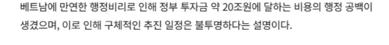

https://bbs.ruliweb.com/best/board/300143/read/77504587

https://bbs.ruliweb.com/best/board/300143/read/77504587

니가해
그래도 푸잉 몸값은 많이 올랐음.
푸잉은 태국이잖아 꽁까이가 비엣남임
"해 봐"
그래 꿈꾸는건 자유지.
한국도 비웃기만 할게 아니라 있는 사다리도 걷어차야하는거 아님?
ㄹㅇ 이게 맞음
예전에 중국 존나 무시했었는데 지금 다방면에서 깽판치는거보면
공산국가+인구수로 밀어붙이는거 절대 만만하게 볼게 아님
지금이야 기반 아무것도 없으니까 비웃지
나중에 기반 닦고 치고 올라오면 그땐 늦음
진짜 사다리 걷어차는게 아니라 조각내서 불태워야됨
근데 어케할거임. 플라자합의를 할수도없고
이제 복지에 기울지 않으면 국민 생활수준을 유지할 수 없는 선진국의 함정에 빠질 것.
ㄹㅇ선진국도 함정 많다
제조업 강국이라지만 아웃소싱이고
중화학공업도 없고
전기생산 겨우 풀칠하는데 정전 일상이고
정경유착 존나 심하고
자국기반 주력산업이랄게 없는데 일단 뭐 해보쇼...
한때 반도체로 잘나갔던 일본도 반도체 되살리기 계속 실패하는데 되겠냐고
저걸 하고싶으면 공산주의를 아예 철폐해야지..
공산주의를 한 채로 잘나가고 싶으면 중국처럼 인구 수 깡패가 되던가.
계획의 현실성은 둘째치더라도
부패가 없는걸 전제로 깔아야 하는 시점에서 조진거지
우선 계획부터가 잘못되었음
값싼 노동력을 기술과 교환한다고?
개가웃겠다
창신메모리처럼 삼하닉스 기술진을 돈주고 빼내오겠습니다! 라고해야지
힘내쇼
중국이 굵직하게 방어 해 줌
아니야 니들 해. 빨리 공장 짓고 다해봐 언능 ㅋㅋ
방향만 보면 저게 맞음 중진국 중에 기존 방식 고수하면서 선진국 올라온 나라 하나도 없음 이제 싼 노동력 기반으로 경제 살리려면 중국보다 더 싸게 더 많이 해야하는데 될 리가 없음
근데 사실 중진국들이 못 올라온게 기존방식에서 못 바꾼것도 있는데 기득권 정치권이 결합, 부패해서 안 바꾼것도 있는지라 구 관습을 타파하는 수준의 개혁이 아니면 힘들듯
재들 지방 호족들은 어지간한 대기업 총수 저리가라임
인건비 싸고 회사돈이 진짜 내돈에다 과시욕 쎈 나라라서
그 도시 최고 유지집 가면 생각보다 너무 크고 고급져서 어이 없어짐.
락자란 도시 유지집 지나가다 봤는데 집이 너무 커서 시청 건물 인줄 알았음
물론 부럽냐면 그냥 병신 같음.
반도체 사업으로 간다는 것에서 나가리임
60년대 후반부터 미국과 일본에서 반도체 사업에 뛰어들었고
우리나라랑 대만이 후발주자로 70년대 초반에 뛰어들었는데
우리나라랑 대만은 이미 진작에 90년대에 일본 반도체 사업이 쇠퇴해서 일본의 경우는 따라잡았지만
미국은 그 몇 년을 현재까지도 따라잡지 못하고 있는게 실정임
게다가 중국이 이미 20년 전부터 이 한미대 3국의 반도체 기밀들을 ㅈㄴ게 훔쳐와서 육성시키려고 시도 중인데
아직 발끝에도 미치지 못하는게 현실임
결국 새로운 시대에 걸맞는 신산업을 찾아서 육성시켜야 한다는 의미임
그나마 AI산업이 가능성이 조금이라도 있는데
지금 시작하는건 이미 많이 늦기는 했다만... 그래도 가능성이 아예 없지는 않으니까 이건 그래도 가능성이 있긴 하다고 봄
물론 또 다른 좋은 산업이 있다면 그걸 가는게 가장 좋기는 함
벳남 축구 리그 연봉이 한국보다 낫다더만
저거 공사비 중간중간에서 다 떼먹어서 저런거임?
나대지말고 바나나 따개나 해